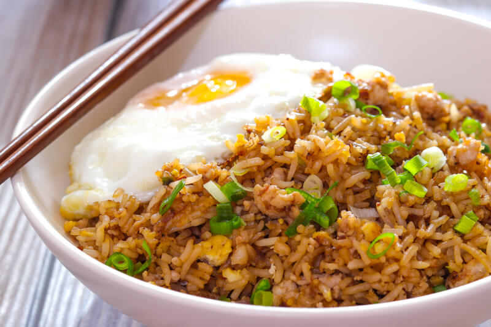

recipes list
Gene's Nasi Recipe

Ingredients
- 2 cups rise
- 3 cups water
- 2 chicken breasts
- 2 eggs
- sping onion
spices
- 2 teaspoons of cumin powder
- 1 teaspoon of turmeric
- 1 teaspoon of ginger powder
- 2 teaspoons of ground coriander
- 2 teaspoons of galangal
Steps
- heat up the 3 cups of water
- once it starts boiling put the rise in and let it boil for 8-10 minutes
- when its done get the pan of the stove cut up the chicken into small cubes
- and cook them in a pan
- on the side also cook the 2 eggs
- when the chicken and eggs are ready
- put the rice and chicken in a pan and put all the spices (given above)
- when all the spices have mixed in, cut up the egg in small pices and put it in the nasi
- then cut up some small spring onion pieces and put them in the nasi and its ready